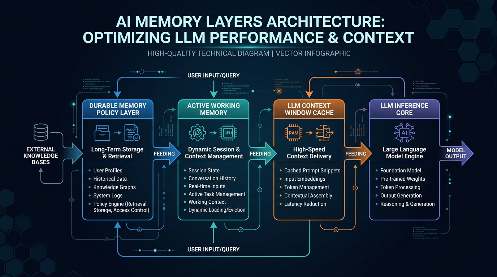

Durable Memory: Why Vector Databases Aren't Enough
TL;DR: Durable memory is not simply persistent disk or vector storage—it is the curated policy layer of an AI system that governs what context should outlive an execution session. By enforcing write-side custody and attaching provenance handles, durable memory prevents "Digital Attic" index pollution and eliminates agentic thrashing during retrieval.
- 1. What Is Durable Memory?
- 2. Why It Matters: The CPU Cache vs. RAM Analogy
- 3. How It Works: The Four Layers of AI Memory
- 4. Memory Is a Write Problem: Write-Side Custody
- 5. Storage vs. Memory Comparison
- 6. Write-Time vs. Read-Time Authority & Jurisdiction
- 7. Common Pitfalls: The Digital Attic & Agentic Thrashing
- 8. Frequently Asked Questions (FAQ)
- 9. Summary & Recommendations
1. What Is Durable Memory?
Durable memory in AI architecture is the governance layer that evaluates, verifies, and curates observations before committing them to long-term storage.
When engineers discuss building long-term memory for autonomous AI agents or large language model (LLM) workflows, the conversation almost immediately converges on one technology: the vector database. Teams benchmark Pinecone, Qdrant, Milvus, or pgvector, debate HNSW vs. IVF index algorithms, and test dense vs. sparse hybrid search models.
However, equating a vector database with durable memory is an architectural mistake. A vector database is a physical retrieval engine—the equivalent of a SSD controller or a database file system. Durable memory, by contrast, is an architectural policy. Storage answers "Can we keep this?"; memory answers "Should we keep this?"
2. Why It Matters: The CPU Cache vs. RAM Analogy
To understand why vector storage alone falls short, we can map the AI memory stack directly to classical hardware memory hierarchies:

Without a strict curation layer between inference execution and physical storage, every temporary calculation, hallucinated thought, and duplicate CLI tool output gets permanently ingested into your vector index.
3. How It Works: The Four Layers of AI Memory
3.1. Context Window (L1/L2 Cache)
The context window represents the immediate tokens available to the LLM during a single forward pass. Like CPU cache, it is fast and directly accessible by the compute engine, but expensive and strictly capacity-constrained.
3.2. Active Working Memory (System RAM)
Active working memory is assembled dynamically at the start of a task. It pulls relevant specifications, user preferences, and recent execution history into a cohesive working payload before feeding the context window.
3.3. Durable Memory (Governance & Policy Layer)
Durable memory enforces strict intake criteria. It determines which artifacts carry long-term value (such as signed system policies, Architecture Decision Records, and verified facts) and rejects temporary scratch outputs.
3.4. Physical Storage Layer (Disk / Database)
The low-level storage engines (PostgreSQL, HNSW indexes, Object Storage) that hold binary vectors, payload JSONs, and relational tables.
4. Memory Is a Write Problem: Write-Side Custody
The vast majority of RAG (Retrieval-Augmented Generation) literature focuses exclusively on the read path: reranking models, embedding models, and similarity thresholds. However, memory quality is fundamentally determined on the write side.
In traditional software engineering, developers do not check compiler output, temporary build artifacts, or local `.cache` folders into Git repositories. We check in source code and specifications. Durable memory requires AI agents to apply the exact same discipline before committing knowledge to disk.
5. Storage vs. Memory Comparison
The table below summarizes the critical architectural differences between raw vector storage and a governed durable memory system:
| Feature / Dimension | Raw Storage (Vector DB / S3) | Durable Memory Architecture |
|---|---|---|
| Core Question | "Can we keep this?" | "Should we keep this?" |
| Ingestion Model | Passive raw append / dump | Active write-side custody & curation |
| Index Quality | Degenerates into a "Digital Attic" | High-density verified truth layer |
| Authority & Scope | Static timestamp / static TTL | Live provenance & read-time revalidation |
| Retrieval Output | Relevant but potentially stale context | Relevant AND authoritative governing facts |
6. Write-Time vs. Read-Time Authority & Jurisdiction
A fact evaluated as authoritative at the time of writing may not remain valid indefinitely. For instance, an API authorization token or security policy may be revoked or narrowed hours after ingestion.
Curation fixes storage volume; it does not solve dynamic jurisdiction. Therefore, write-side custody must store provenance handles—metadata recording who granted the fact, under what authority, and where to verify its current state—allowing read-time hydration to re-validate live credentials before loading context into active working memory.
7. Common Pitfalls: The Digital Attic & Agentic Thrashing
7.1. The Digital Attic ("Confident Garbage")
When an application ingests all past conversations and execution outputs without curation, the vector database becomes a Digital Attic. Stale, conflicting, and obsolete facts remain fully indexed and highly retrievable, leading to high-confidence retrieval of invalid information.
7.2. Agentic Thrashing
When poisoned or contradictory context is injected into the context window, the LLM enters Agentic Thrashing: spending valuable token generation cycles attempting to resolve conflicting internal instructions rather than making forward progress on the assigned task.
8. Frequently Asked Questions (FAQ)
What is the difference between a vector database and durable memory?
A vector database is a physical storage engine for vector embeddings, whereas durable memory is the architectural policy layer that decides which observations are verified, authoritative, and worth preserving long-term.
What is the Digital Attic in AI architectures?
The Digital Attic is an uncurated vector index filled with temporary calculations, stale notes, and duplicate logs. When queried, it supplies contradictory context, causing the LLM to thrash during inference.
Why is AI memory considered a write problem rather than a read problem?
Retrieval systems cannot filter out context that was never curated at ingestion. Deciding what knowledge deserves to survive must happen at the write boundary before vector indexing occurs.
How does write-side custody improve LLM context accuracy?
Write-side custody evaluates incoming information for authority, duplicate status, and provenance. It attaches metadata handles so read-time hydration can verify if permissions or facts have changed.
What is Agentic Thrashing in LLM applications?
Agentic Thrashing occurs when an LLM spends inference cycles reconciling conflicting or obsolete context retrieved from an uncurated memory store instead of executing forward progress on the assigned task.
9. Summary & Recommendations
- Enforce Write-Side Custody: Implement intake policies that evaluate incoming facts for authority and durability before indexing.
- Separate Storage from Governance: Treat vector databases as raw disk engines, building curation logic upstream.
- Attach Live Provenance Handles: Store authorization handles alongside facts to enable read-time revalidation during task hydration.